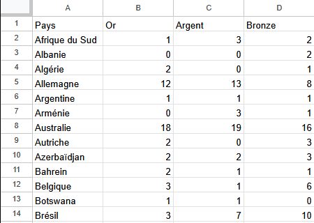

Projet : Réalisation d'une Chaîne de Traitement de Fichiers


×

L'objectif de ce projet était de créer une chaîne automatisée pour le traitement de fichiers. Cela impliquait la lecture de données depuis des fichiers sources, leur transformation et/ou validation, puis la génération de fichiers de sortie.
Plusieurs scripts ont été écrits en utilisant le langage de script Bash pour la manipulation de base des fichiers, ainsi que le langage PHP pour des traitements plus complexes sur le contenu des fichiers.
Pour garantir la reproductibilité et l'isolement de l'environnement d'exécution, l'ensemble de la chaîne de traitement a été configuré pour s'exécuter à l'intérieur de conteneurs Docker.
Technologies Utilisées
Compétences Acquises
- Maîtrise des commandes et scripts Bash
- Programmation en PHP pour le traitement de données
- Automatisation de tâches répétitives
- Compréhension des concepts de conteneurisation avec Docker
- Création et gestion d'environnements isolés
- Débogage de scripts